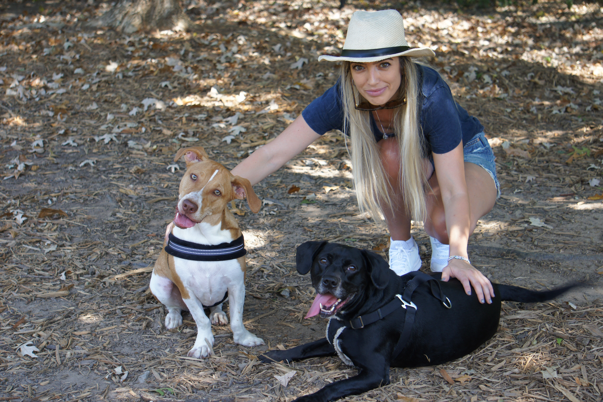

Im from Bulgaria
My country is famous as the oldest country in Europe! Bulgaria is also famous for its natural diversity with mountains, plains, Black Sea Coast, rivers, lakes and hot springs Greeting in Bulgaria is "Zdravei" 🇧🇬

Also Bulgarian yogurt is the most popular variety of yogurt in the world and is one of the things that make Bulgarians proud to call themselves Bulgarians; it is their exclusive invention and heritage that dates back centuries.

My favorite hobbies are
- Yoga
- Painting
- Cooking
- Paddle boarding
- Outdoor activities
- Spending time with my 4 legger buddy


What's your dream job?
Job which Always will bring me challenging ,opportunities and also huge rewards in terms of personal satisfaction,self development and creative expression.
Where do you live?
I live in the state of Georgia. Famous as number-one producer of peanuts, pecans, and vidalia onions, known as the sweetest onions in the world, can only been grown in the fields around Vidalia and Glennville. Another sweet treat from the Peach State is Coca-Cola, which was invented in Atlanta in 1886.
Why do you want to be a web developer?
Technology has dramatically changed the course of humanity. The way we connect to each other, achieve daily tasks, enjoy entertainment or manage our finances is irreversibly affected by technology.I want to be at the center of the change and be able to contribute to society’s progress. I want a solid career path,flexible working hoars and locations.All that I see in software developer.Also i will never be bored or lack motivation in a repetitive daily job.